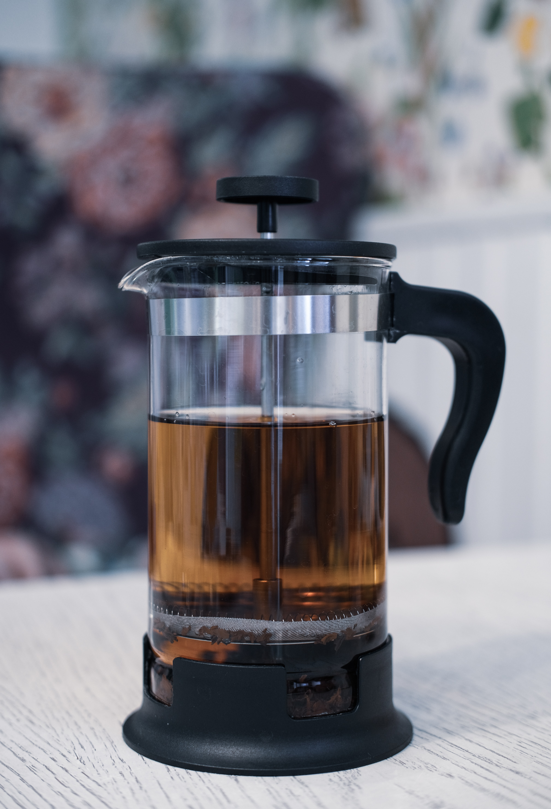
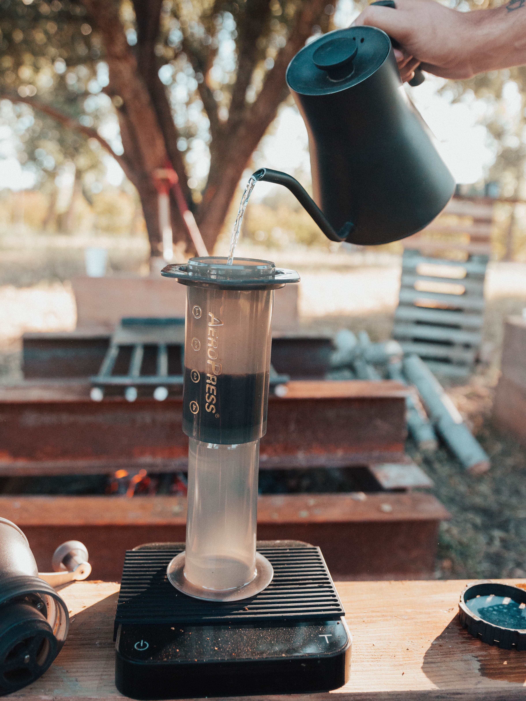
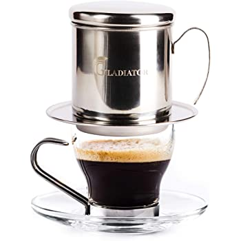
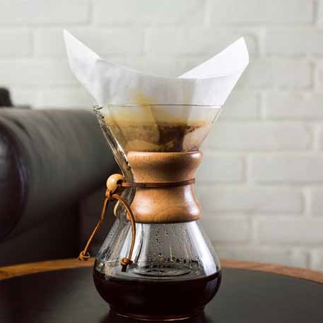
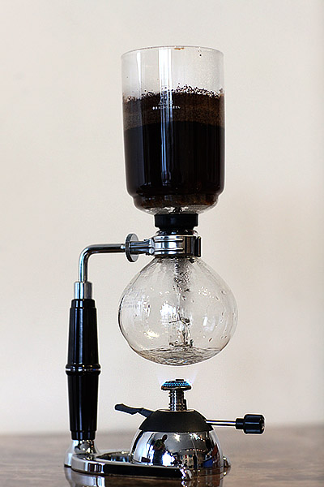
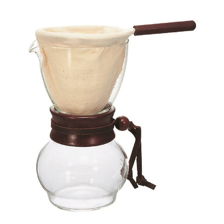
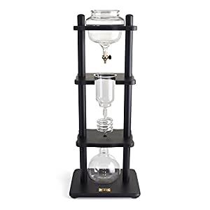
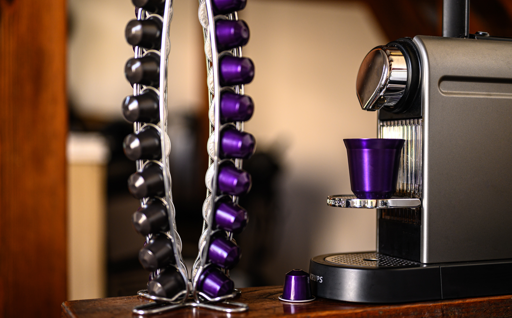

Coffee Machines
Espresso Machine

The machine used in coffee shops producing espresso which is the base for most drinks. It uses pump pressure to force the water through the coffee. When done correctly it produces a small drink - an intense shot balanced between sweet and acidic.
Photo by Isabela Kronemberger on Unsplash
French Press
The most common and easy to use which gives the coffee a great texture. Water and coffee infused together with a mesh filter which pushes through the brew leaving finer particles.
Aeropress
A quick and easy to use brewer which can be used for filter style coffee or something stronger if preferred. The grind, amount of coffee and the pressure can be tweaked to your own preferences.
Photo by William Moreland on Unsplash
Moka pot

This method brews a strong cup of coffee using steam pressure with a silky texture. The temperature gives it an intense flavour unlike what is commonly believed it does not make espresso
Photo by Brent Ninaber on Unsplash
Ibrik

This method is popular throughout the Middle East and Eastern Europe. It is a copper pot with long handle and brews a distinctive thick texture. It uses a super fine grind with the water-grind ratio and heat producing a full-flavoured coffee.
Photo from turkish coffee world
Phin
This method is Vietnamese and uses a gravity-based filter insert to compress the coffee. Chinese version has the filter is screwed on allowing more control over the extraction. It is easy to use and can change dose and grind to your personal preferences.
Photo from amazon
Filter Pourover
This is an easy to use brewing method done through a paper filter means the grounds are easily disposed of and it can be brewed straight into a cup.
Photo from coffeemakered.com
Electric filter coffee

This produces great coffee using good quality beans and fresh water. It is easy to clean as grounds can be removed easily and composted.
Photo from beantocupcoffee.co.uk
Syphon
This takes time it is a visually interesting method of brewing coffee and they are very popular in Japan.
Photo from coffeegram.com
Cloth Brewer
It is a traditional way of filtering through ground coffee and is also known as 'sock' or 'nel brewing. It has a richer texture because of the oils that pass through the cloth and is preferred to paper filters as there is no papery flavour.
Photo from beanground.com
Cold Dripper
This uses cold water for brewing low-acidity coffee but can be served hot or cold and it requires more time. It can also be done in a french press by leaving overnight in the fridge and straining through a filter.
Photo from trendhunter.com
Single Serve
Single serve machines have gained huge popularity in recent years with their ease of use with the two more popular being Tassimo and Nespresso. Tassimo uses pods and Nespresso use capsules with many of the better known coffee shops creating their own capsules suitable for use at home in these machines.
Photo by Sylvain Thrd on Unsplash